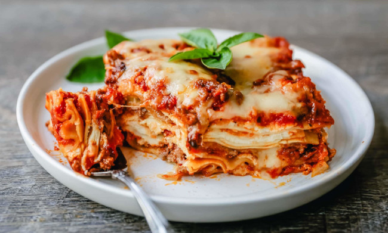

My go-to Lasagna

This delicious recipe is my go-to Lasagna, it is a family favorite dish!
Making lasagna is a long but well worth task. You'll find a detailed ingredient list and step-by-step guide in the recipe below, you can always alter the ingredients to your liking, but let's go over what you need before cooking:
Ingredients you'll need:
- Two types of meat: Lean and Italian sausage
- Onion and Garlic: One onion and 2 cloves to cook with the meat
- 3 different Tomatoes types: one canned Tomatoes; two cans Tomato Sauce; and two cans Tomato Paste
- White Sugar: 2 tablespoons of sugar, this helps to enhance the sauce flavor
- Spices & Seasoning: 4 tbsp parsley; 1 1/2 tsp dried basil; 1 tsp salt; 1 tsp Italian seasoning; 1/2 tsp fennel seeds; and 1/4 tsp black pepper
- Lasagna Noodles: minimum of 12 noodles (Homemade or Bought)
- Cheeses: Parmesan; Mozzarella(sliced or shredded); and Ricotta
- Egg: one egg to help bind the ricotta cheese
- Water: And lastly 1/2 water
How to make Lasagna Step-By-Step:
- Step one: Make the meat sauce. Start browning and caramelizing the meat with the onion and cloves. After the meat is cooked add the three types of tomatoes and stir. Then add water and stir, after that add the sugar, basil, fennel, Italian seasoning, salt, pepper and finally parsley. Stir and let simmer for 1 1/2 hours.
- Step two: Preferably while the meat sauce is finishing start cooking the noodles bringing them to a boil.
- Step three: Make the ricotta mixture. Start by adding one egg and ricotta cheese into a bowl, next add 2 tbsp of parsley and 1/2 tsp salt. MIX WELL!
- Step four: Now that you have most of the ingredients prepared grab your cooking dish and start the layering process(See below for layering steps).
- Step five: Cover your dish with foil and bake on 375 degrees F for around 50 minutes(some people will take the foil off at the 25 min mark and bake without for the remaining 25min).
- Step six: Eat your ooey-gooey delicious meal, enjoy! :)
How to Layer your Lasagna
- Layer one: meat sauce
- Layer two: noodles
- Layer three: ricotta mixture
- Layer four: mozzarella slices or shred
- Layer five: more meat sauce
- Layer six: parmesan cheese
- Repeat the layers
- Finish the final layer with mozzarella and parmesan on top